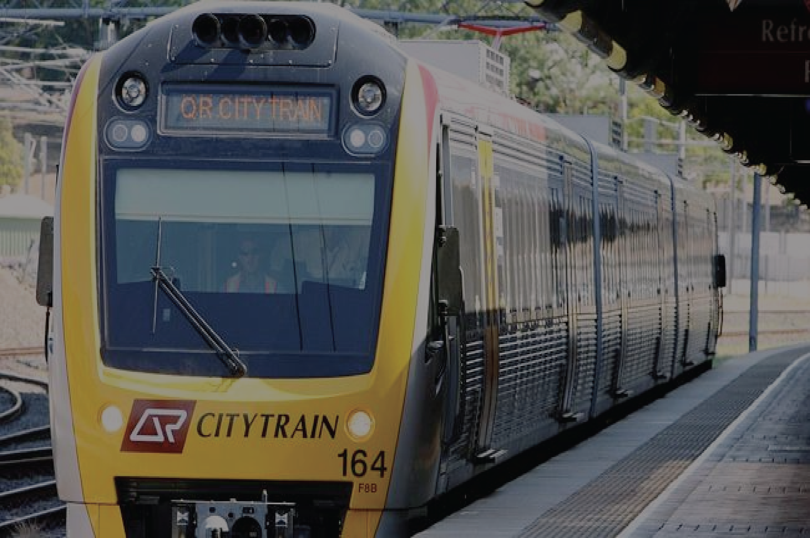

URGENT MEETING CALLED FOR QUEENSLAND RAIL BOARD FOLLOWING CUTS TO 100 SERVICES IN BRISBANE
By ABC NEWS
October 22, 2016 9:50 AM
Queensland Rail's (QR) board has been ordered to hold an urgent meeting this weekend to work out interim arrangements following major disruptions to Brisbane's network due to a lack of drivers.
More than 100 trains were cancelled on Friday because not enough drivers were trained to operate the new Redcliffe Peninsula line, which opened earlier this month.
QR's chief executive Helen Gluer apologised for the disruptions, saying QR underestimated staffing and training requirements for the new service.
Transport Minister Stirling Hinchliffe has since ordered the QR board to meet this weekend to sort it out.
He wants interim arrangements put in place immediately to restore services across the network.
Queensland Council of Unions assistant general secretary Michael Clifford said driver shortages were a legacy of the former Newman government's public service cutbacks.
"If they hadn't cut the training programs and if they hadn't cut the recruitment of staff we wouldn't be having the problems we are having today," he said.
QR is hoping to release an interim timetable by Monday that will be in place until more drivers are trained.